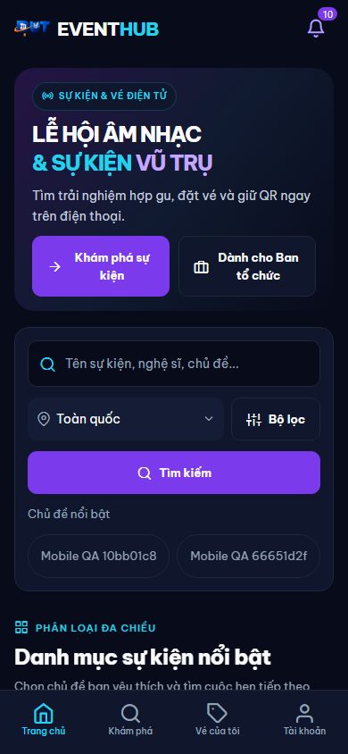

EVENTHUB · KIỂM TRA BỐ CỤC MOBILE
Giao diện phù hợp với điện thoại
Giao diện cập nhật ngày 11/11/2026: tải thêm trên ví vé/thông báo, khám phá cuộn tải tiếp, phân trang quản lý gọn và icon ứng dụng từ logo web. Ảnh web dùng dữ liệu QA local; các mục Android là ảnh emulator của APK mới. Chọn màn để xem.

Ảnh tĩnh không phải ứng dụng Live. Kết quả UI/API local và giới hạn native được ghi trong báo cáo phiên.